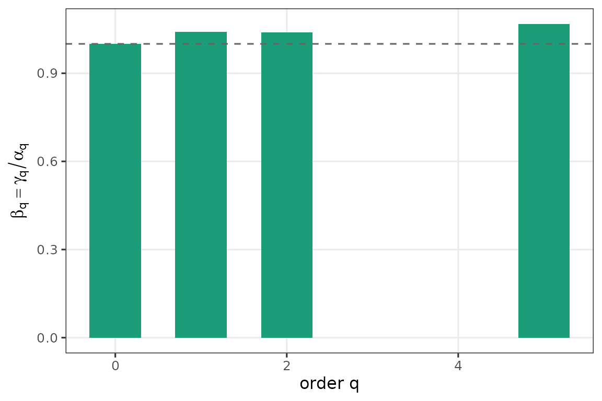

Multiplicative beta diversity (Jost 2007) answers: “how many distinct compositions is this trajectory equivalent to?” A country whose seat shares drift gently has beta near 1; a country with genuinely different elections has beta approaching T.
Columns must carry party identity, not rank. Row-sorting shares by size (“column 1 = largest party that year”) destroys the information beta is designed to detect — when two parties swap positions, the sorted representation records stability while actual identity changed. Every example below uses named, non-sorted columns.
A stable country — Austria after 1970
Two parties dominate (SPÖ, ÖVP) with steady shares across three decades. β should sit near 1 at every q.
austria <- rbind(
`1986` = c(SPOE = 0.437, OEVP = 0.421, FPOE = 0.098, Gruene = 0.044),
`1990` = c(SPOE = 0.437, OEVP = 0.328, FPOE = 0.180, Gruene = 0.055),
`1994` = c(SPOE = 0.355, OEVP = 0.284, FPOE = 0.235, Gruene = 0.071),
`1995` = c(SPOE = 0.388, OEVP = 0.350, FPOE = 0.224, Gruene = 0.049)
)
alpha_beta_gamma(austria, q = c(0, 1, 2, 5),
years = c(1986, 1990, 1994, 1995))
#> Warning: as_composition(): renormalizing rows so each sums to 1 (max deviation
#> was 0.055).
#> <beta_diversity: T = 4 rows, 4 q points>
#> q alpha beta gamma T
#> 0 4.000000 1.000000 4.000000 4
#> 1 3.296660 1.014637 3.344912 4
#> 2 3.004748 1.019008 3.061863 4
#> 5 2.713200 1.024388 2.779369 4A churning country — Germany 2002-2005-2009
Between 2002 and 2005 SPD and CDU/CSU swap as the largest party. Column order stays constant (this is what keeps identity); only the entries move. β₂ captures the swap.
germany <- rbind(
`2002` = c(CDU = 0.315, CSU = 0.096, SPD = 0.416,
FDP = 0.078, Gruene = 0.091, Linke = 0.003),
`2005` = c(CDU = 0.293, CSU = 0.075, SPD = 0.362,
FDP = 0.099, Gruene = 0.083, Linke = 0.088),
`2009` = c(CDU = 0.312, CSU = 0.072, SPD = 0.235,
FDP = 0.150, Gruene = 0.109, Linke = 0.122)
)
bd <- alpha_beta_gamma(germany, q = c(0, 1, 2, 5),
years = c(2002, 2005, 2009))
#> Warning: as_composition(): renormalizing rows so each sums to 1 (max deviation
#> was 0.001).
bd
#> <beta_diversity: T = 3 rows, 4 q points>
#> q alpha beta gamma T
#> 0 6.000000 1.000000 6.000000 3
#> 1 4.689208 1.040449 4.878880 3
#> 2 3.997689 1.039583 4.155931 3
#> 5 3.221741 1.067642 3.439665 3
plot(bd)
What sorting would hide
To make the paper’s “sorting hides identity” point concrete: sort each row descending, then rerun the decomposition. β collapses toward 1 because the pooled composition now averages “the k-th largest slot” across rows, not “the share of party X.”
germany_sorted <- t(apply(germany, 1, sort, decreasing = TRUE))
colnames(germany_sorted) <- paste0("Rank_", seq_len(ncol(germany_sorted)))
alpha_beta_gamma(germany_sorted, q = c(0, 1, 2, 5),
years = c(2002, 2005, 2009))
#> Warning: as_composition(): renormalizing rows so each sums to 1 (max deviation
#> was 0.001).
#> <beta_diversity: T = 3 rows, 4 q points>
#> q alpha beta gamma T
#> 0 6.000000 1.000000 6.000000 3
#> 1 4.689208 1.025677 4.809613 3
#> 2 3.997689 1.020823 4.080931 3
#> 5 3.221741 1.033500 3.329670 3The unsorted β at q = 2 exceeds the sorted one — exactly the
β_unsorted ≥ β_sorted inequality the paper proves.
Collapsing to elections
When consecutive country-years repeat the same composition between
elections, pass years to weight by term length.
alpha_beta_gamma() auto-collapses via
collapse_to_elections().
germany_annual <- rbind(
`2002` = germany["2002", ],
`2003` = germany["2002", ], # same composition
`2004` = germany["2002", ], # same composition
`2005` = germany["2005", ],
`2006` = germany["2005", ],
`2007` = germany["2005", ],
`2008` = germany["2005", ],
`2009` = germany["2009", ]
)
alpha_beta_gamma(germany_annual, q = 2, years = 2002:2009)
#> Warning: as_composition(): renormalizing rows so each sums to 1 (max deviation
#> was 0.001).
#> <beta_diversity: T = 3 rows, 1 q points>
#> q alpha beta gamma T
#> 2 3.838372 1.023497 3.928561 3